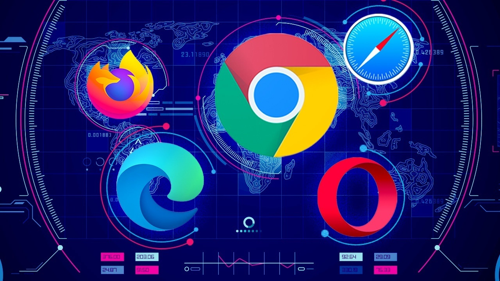
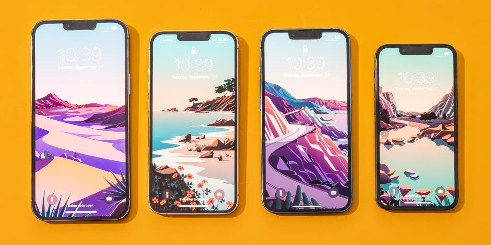
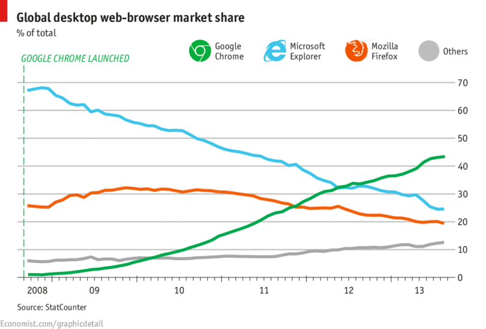
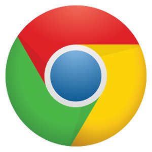
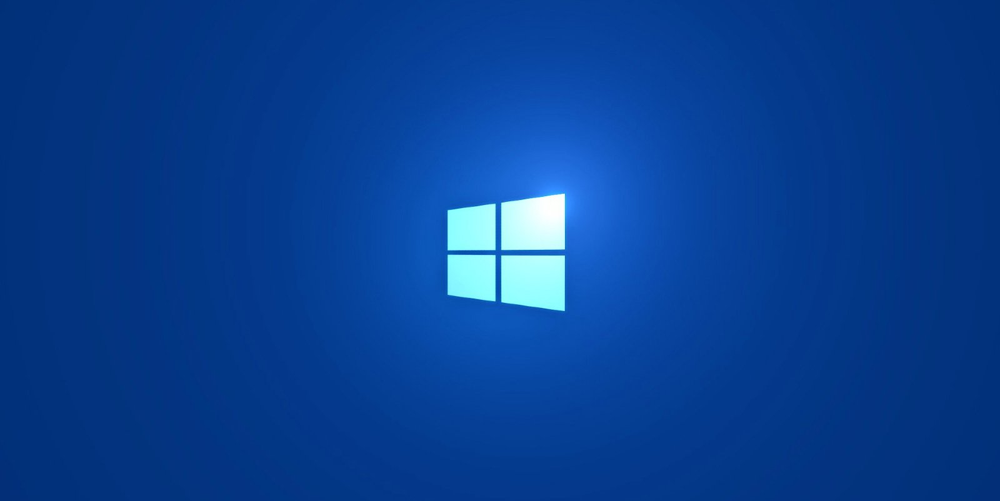

What is a browser?
Browsers also commonly referred to as Web Browsers are application software for accessing the World Wide Web. When an individual gets the URL of a web page and the web browser accepts/retrieves necessary content from that web server which then is used to display on the individual’s device.
Many users believe the search engine and a web browser are the same things, but both are different in their own physical features. A search engine is commonly known as a website that provides links to other web pages, but to do this, the user must have some sort of way to connect to a website’s server and display all of its web pages. Users commonly install web browsers to help complete their tasks successfully.
They are used on multiple devices ranging from desktop computers all the way to smartphones. Web browsers can easily be accessed on laptops and tablets as well. As of 2020, an estimated number of 4.9 billion users has used at least one browser. The most used browser according to Wikipedia is “Google Chrome”. Google Chrome is known to have a 64% global market share on all devices, and Safari follows up with 19%.




Explanation of a Browser (Google Chrome)
Introduction
Google Chrome was developed by the well-known Google; it is a cross-platform web browser and was released in 2008 for Microsoft Windows. It was built with free software components from Apple Web kit and Mozilla Firefox. Later in the years, it was ported to Linux, macOS, IOS, Android, and was set as the default browser. The main component of this browser is Chrome OS. It serves as the platform for web applications. Its source code is generally from Google’s free and open-source software project Chromium, later licensed as proprietary freeware. The original rendering engine was Web kit, but Google eventually forked it to create the Blink engine. Stat Counter estimates that Chrome has a 65% worldwide browser market share, as of July 2021. On devices like smartphones, Safari was normally the dominant browser but Chrome surpassed it, and due to this success, Google expanded the “Chrome” brand name to other products like Chrome OS, Chromecast, Chromebook, Chromebit, Chromebox, and Chromebase.
The History of Google Chrome:
The CEO of Google, Eric Schmidt has been opposing the development of an independent web browser for six years. He has opposed this idea as he states that “at the time, Google was a small company”, and he did not want to go through bruising browser wars”. After the co-founders Sergey Brin and Larry Page hired several Mozilla Firefox developers who then made the demonstration of Chrome, this changed the mind of Schmidt and he eventually thought it was so good that it essentially forced him to change his mind. Rumours of the building of Google’s web browser first appeared in September 2004. According to Online Journals and US newspapers, Google was hiring former Microsoft web developers among others. It was shortly released after Mozilla Firefox 1.0, which took the market share from Internet Explorer, which stated security problems. The development of this browser has started in 2006 which was spearheaded by Sundar Pichai.
Public Release:
The browser was officially launched as a beta version on September 2, 2008. It was released for Windows XP and newer, with support for 43 languages. It was later publicly released on December 11, 2008, on the same day, a CNET news item drew attention to a passage in the Terms of Service statement for the initial beta release. It granted Google a license to all the content transferred via the Chrome browser. Google responded to this criticism by stating the languages used and how it was borrowed from other products which then was removed from the Terms of Service. Afterwards, Chrome has received a quick gain of 1% usage share but, after the initial surge, the usage share has dropped until it hit a low of 0.69% in December 2008. Later on, by December 2008, Chrome has passed the 1% threshold again. The CNET has reported that Google was planning on releasing versions of Chrome for OS X and Linux in the first half of the year. As of December 2009, Google has released their beta versions of Chrome OS X and Linux. One of the twelve browsers offered on BrowsersChoice.EU to European Economic Areas users of Microsoft Windows in 2010 was Chrome.


